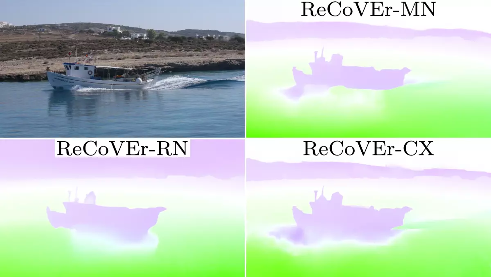
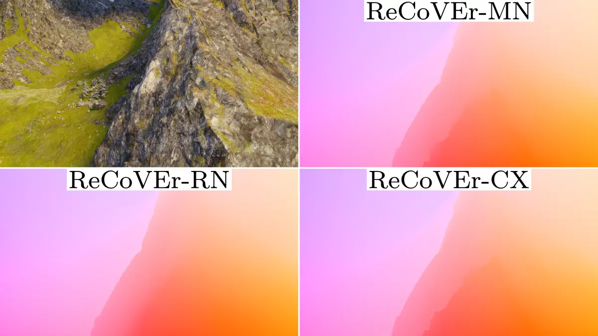

Qualitative Results



We propose a method to remove cost volumes from optical flow estimators during training, and thereby, we are able to create fast and accurate optical flow estimators with a significantly reduced memory footprint. Our most accurate model, ReCoVEr-CX, reaches state-of-the-art accuracy while being efficient w.r.t. inference and memory.
Cost volumes are used in every modern optical flow estimator, but due to their computational and space complexity, they are often a limiting factor in optical flow methods regarding both processing speed and the resolution of input frames. Motivated by our empirical observation that cost volumes lose their importance once all other network parts of, e.g., a RAFT-based pipeline have been sufficiently trained, we introduce a training strategy that allows to remove the cost volume from optical flow estimators throughout training. This leads to significantly improved inference speed and reduced memory requirements. Using our training strategy, we create three different models covering different compute budgets. Our most accurate model reaches state-of-the-art accuracy while being 1.2× faster and having a 6× lower memory footprint than comparable models; our fastest model is capable of processing Full HD frames at 20FPS using only 500MB of GPU memory.
Out-of-domain evaluations of EPE on datasets that were not used during training without any additional finetuning. We find no significant differences between SEA-RAFT and our best method regarding the achieved accuracies on unseen datasets, showing that our training method has no negative impact on the generalization capabilities of the resulting network.
Comparison of the EPE of different methods on the different annotated regions of the Spring training split. None of the methods were fine-tuned on Spring, and all of them were at least trained on FlyingChairs and FlyingThings, but since the training schedules changed over time, we marked the methods that were trained using additional data from TartanAir or Sintel. All evaluated methods received the full-resolution frames as inputs without any resizing.
This work was funded by the Hessian Ministry of Science and the Arts (HMWK) through the project “The Third Wave of Artificial Intelligence – 3AI”. The work was further supported by the Deutsche Forschungsgemeinschaft (German Research Foundation, DFG) – project number 529680848 and under Germany’s Excellence Strategy (EXC 3057/1 “Reasonable Artificial Intelligence”, Project No.\ 533677015). Stefan Roth acknowledges support by the European Research Council (ERC) under the European Union’s Horizon 2020 research and innovation programme (grant agreement No.\ 866008)

@inproceedings{Kiefhaber:2025:recover,
title = {Removing Cost Volumes from Optical Flow Estimators},
author = {Simon Kiefhaber and Stefan Roth and Simone Schaub-Meyer},
booktitle = {IEEE/CVF International Conference on Computer Vision (ICCV)},
year = {2025}
}